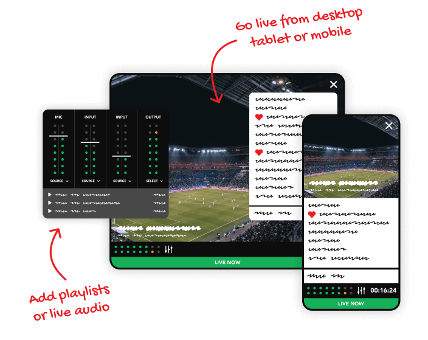
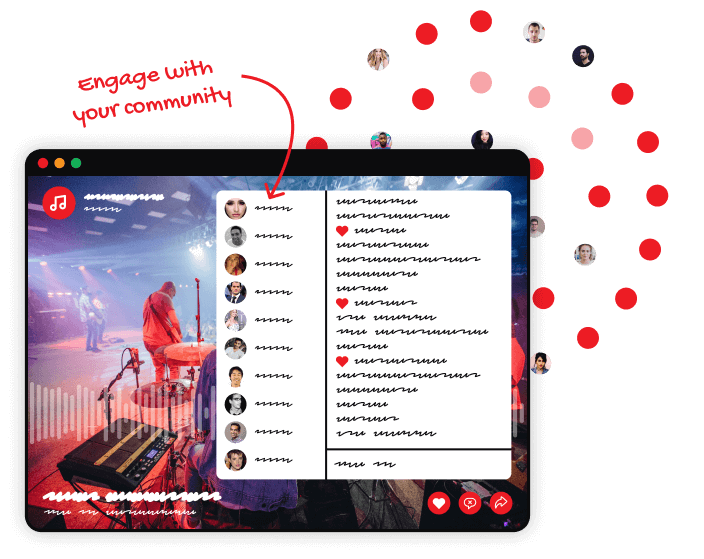
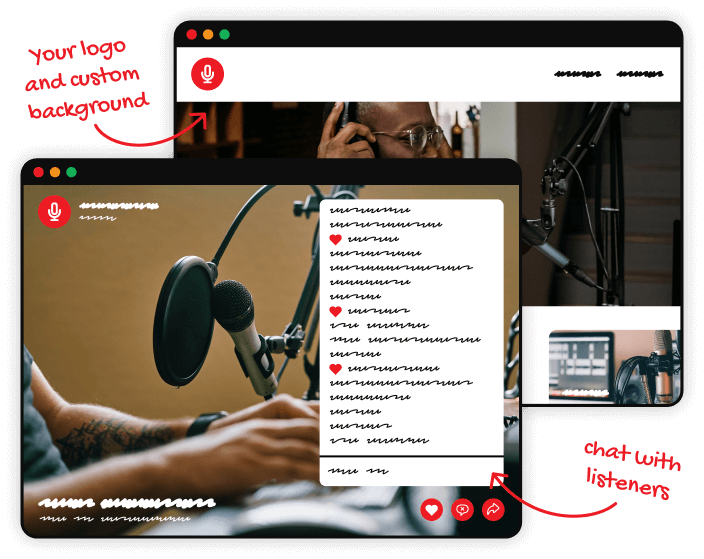
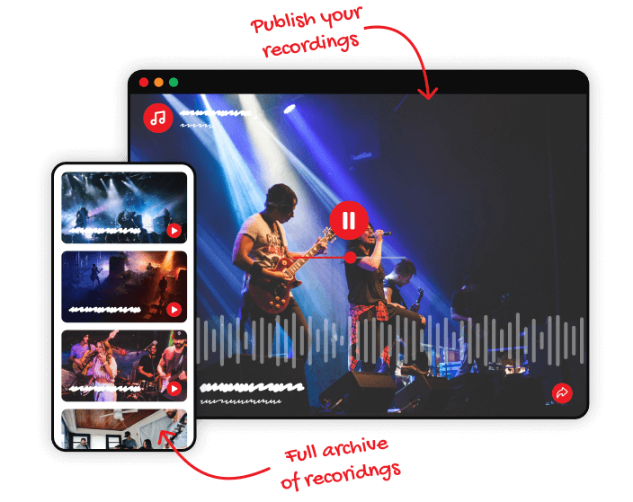
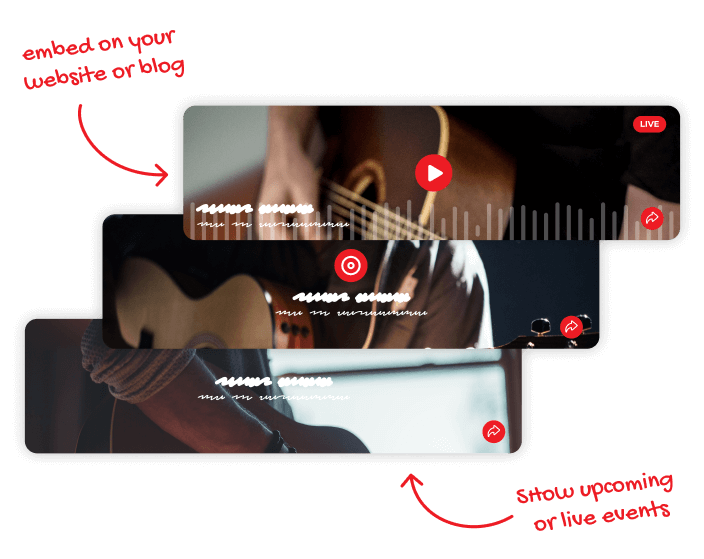

Professional tools for audio, made simple
Plug and play your audio into the mobile or desktop broadcast app. Keep it simple with one audio source for mobile. Or use the desktop app for a mix of audio input and a playlist of sounds. Your audio, done your way.


Reach an audience as big as you need. Connect, chat and engage with listeners all over the world with the confidence that everyone will be able to connect to your live stream. Mixlr has dedicated servers set aside, allowing you to scale your broadcasts as big as you need without extra costs.
This is where all your audio is hosted. People can listen live while chatting or play back recordings. The custom players are ad-free, feature audio visuals and an immersive full-screen experience. Brand your channel with a logo, custom background and personalized URL. It's your site for your audio.


Record your broadcasts and publish them to your channel when you're ready. Listeners can visit your entire archive of past broadcasts and share direct links to their favorites.
Make it easier for people to come across your audio. Embed an ad-free player to your other existing sites to promote your audio content. It's as simple as copying and pasting an HTML widget code.

Your schedule event automatically turns into a live stream page with chat as soon as you go live. Use only one link to promote your event in advance and during your broadcast.
Keep informed on how well your broadcasts are performing with end-of-broadcast and weekly stats emails. Get numbers on your unique listeners, chat messages and hearts.
Decide who can access your channel with access settings enabled. Remain private indefinitely or create one-off exclusive audio content for select listeners only.
See how many unique listeners connected, how long for, and which countries or cities they tuned in from. View your listener stats over any selectable time period, and export the most relevant data as an easy to use spreadsheet file.
Control audio quality as needed to suit bandwidth restrictions or to match the quality required for your type of content. With the desktop app, you can switch between low, standard, and high quality audio even while broadcasting.
With a unique livestream URL, you're free to build your own website, app or player around your live audio. We encode your livestream URL in mp3 format at a quality of 128kbps.